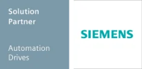

Cooperating Smartly
ZOLLER works with partners to optimally meet customer needs.
ANCA
ANCA is the market leader in the area of high-quality CNC grinding machines and CNC systems. The company has continued to evolve; this lies in its corporate strategy, which is based on innovation and technology, as well as its determination to manufacture machines that satisfy our customers and exceed their expectations.
ZOLLER offers an interface for ANCA tool grinders.
A+B Solutions, LLC
With more than 35 years of experience, A+B Solutions offers comprehensive expertise in the design and integration of solutions for production monitoring and control. As a solution partner to leading providers such as Siemens PLM Software, A+B Solutions offers its customers end-to-end solutions: from consulting, through planning and project design, to system integration and service.
A+B Solutions’ solutions provide interfaces to a wide range of applications and, as the central hub for all development, order, and production data, manufacture a consistent and unified data structure. A+B Solutions is a development partner of ZOLLER for integrating our systems with Siemens NX and Teamcenter.
Balluff
With over 50 years of experience in sensor technology, Balluff GmbH is today one of the most performance-oriented and globally leading manufacturers of sensor technology for industrial automation. Sophisticated technology and state-of-the-art electronics—thoroughly inspected in the company’s own certified laboratory—application-specific customer solutions, personalized consulting, and first-class service are the hallmarks of the company, headquartered in Neuhausen a.d.F., just outside Stuttgart. This is made possible by the dedication of 2,050 employees in Germany and abroad.
Balluff and ZOLLER are collaborating in the area of tool data transmission through tool coding and tool identification.
Camaix GmbH
Camaix provides services in the areas of mold making, mechanical engineering, and automotive manufacturing. In recent years in particular,
the company has focused on aerospace technology and complex 5-axis and 6-axis machining, developing specialized solutions for these areas.
The simple and intuitive Mastercam interface to ZOLLER tool management allows users to use the current tool geometries of the assembled tools in Mastercam and to use the data for simulation and collision detection.
Camtek GmbH
Camtek GmbH, located in Weinstadt near Stuttgart, was founded in 1993 as the exclusive distributor of the PEPS CAD/CAM system. In close collaboration with leading machine and control system manufacturers,
the company develops high-quality post-processors and continuously improves both systems.
ZOLLER offers you a convenient and simple interface to the PEPS CAD/CAM system.
Delcam
Delcam is one of the world's leading developers and providers of modern CAD/CAM and device-independent 3D measurement software for the manufacturing industry. Today, Delcam is the largest developer of CAD/CAM software in the United Kingdom and has offices in North America, Europe, and Asia. Delcam products are used by more than 50,000 companies in over 80 countries. Delcam’s products include, among others, the world’s leading CAM software, PowerMILL. Through
the PowerMILL interface to ZOLLER TMS Tool Management Solutions, you have convenient access to the extensive ZOLLER database.
DP Technology
DP Technology is one of the leading manufacturers and suppliers of computer-aided manufacturing (CAM) software for a wide area of manufacturing industries. ESPRIT, DP Technology’s flagship product, is an extremely powerful and high-quality NC programming system for the areas of milling, drilling, turning, wire EDM, and multifunctional machines such as mill-turn centers.
The simple and intuitive ESPRIT CAM interface to ZOLLER TMS Tool Management Solutions enables the easy exchange of tool data.
Virtual Gibbs
Virtual Gibbs is a powerful, flexible CAM software that significantly simplifies CNC programming. Its user-friendly interface boosts productivity, making it ideal for CNC programmers, machinists, and engineers. With support for 2D to 5-axis milling, turning, MTM, and wire EDM, Virtual Gibbs enables fast and reliable programming. Virtual Gibbs is the leading CAM solution for programming complex multi-axis machining centers. Thanks to the ZOLLER interface in Virtual Gibbs, your tools are created centrally and only once, ensuring efficiency and consistency.
GROB
For nearly 100 years, GROB has been a leader in the development and construction of highly innovative manufacturing and automation systems. The family-owned company is known for its first-class products, cutting-edge technologies, and absolute reliability. From sales to design and manufacturing to commissioning—GROB’s qualified engineers and technicians meet even the most demanding customer requirements.
Hermle
Hermle machining centers serve the efficient machining of tools, molds, and production parts. Thanks to their quality and high precision, they are used in countless manufacturing sectors, particularly in demanding industries such as medical technology, the optical industry, the aerospace and automotive industries, tool and mold making, and among their suppliers.
ZOLLER presetting and measuring machines offer an optional interface to Hermle machining centers.
Ingersoll
Ingersoll develops and manufactures standard and special tools equipped with insert tips. These tools are used worldwide, including in the automotive and mechanical engineering industries. In addition to its standard product line, Ingersoll develops and designs sophisticated solutions tailored to its customers’ requirements.
In collaboration with Ingersoll, ZOLLER has, among other things, developed an innovative concept for workshop-based Inspection & Measuring of insert tipped hobbing and tooth shape cutters.
KOMET CERATIZIT GROUP
With innovative tool concepts and comprehensive solutions for bore machining, the KOMET CERATIZIT GROUP is a global technology leader. KOMET customers especially value the forward-looking services, unique technical support, practical seminars, and premium tools for drilling, reaming, and threading.
ZOLLER offers solutions for presetting and measuring tools from the KOMET CERATIZIT GROUP.
KROMI
KROMI Logistik
AG offers manufacturing companies in Germany and abroad a comprehensive outsourcing solution for the supply of precision tools. The center of gravity lies with technical, sophisticated cutting tools for metal and plastic machining.
The TMS Tool Management Solutions SILVER package includes the interface to KROMI.
MAKINO
MAKINO is recognized as one of the leading technology and service providers in the machine tool industry. Its product range includes machining centers for parts manufacturing as well as for tool and mold making, covering a wide range of applications in the aerospace, automotive, agricultural and construction machinery, general mechanical engineering, and microtechnology areas.
ZOLLER presetting and measuring machines offer an optional interface to MAKINO machining centers.
moldtech GmbH
Based on the TopSolid CAD/CAM product line, MOLDTECH offers solutions for the machining industry. With services centered around the TopSolid product line, Moldtech helps users tackle challenging design and manufacturing applications more quickly and effectively.
The simple and intuitive TopSolid’Cam interface for ZOLLER tool management allows you to use the current tool geometries of the assembled tools to program in TopSolid’Cam and to use the data for simulation and collision detection.
MTS AG
MTS
AG develops and distributes software for CNC grinding machines worldwide. The "tool-kit PROFESSIONAL" product is known worldwide as the software for professionals used on the shop-floor for the production and regrinding of simple to complex workpieces.
ZOLLER presetting and measuring machines provide an interface to tool grinding machines equipped with the MTS software solution.
NUM
NUM manufactures CNC controls and corresponding software solutions. In the area of tool grinding, NUM is the market leader with its NUMROTOplus software.
ZOLLER presetting and measuring machines provide an interface to tool grinding machines equipped with the NUMROTOplus software solution.
Okuma
Okuma is a leading provider of innovative machine tools with a broad and impressive product portfolio. This includes high-precision and robust NC lathes, multifunctional machines, and machining centers equipped with the outstanding OSP control system.
ZOLLER presetting and measuring machines offer an optional interface to Okuma machine tools.
Open Mind
OPEN MIND Technologies AG develops and markets innovative CAM/CAD solutions that generate optimal NC milling and turning programs for machine tools based on digital models. Manufacturers from different industries around the globe choose OPEN MIND products because they enable cost-effective and efficient manufacturing. This results in models, prototypes, tools, molds, prismatic workpieces, integral components, and more of impressive quality.
Through the hyperMILL® interface to ZOLLER TMS Tool Management Solutions, you have convenient access to the extensive ZOLLER database.
OPUS
For over 30 years, OPUS® has been providing task-oriented solutions for CAM, MDE, and DNC. Well over 4,000 installations in nearly 1,000 companies speak for themselves. OPUS® is adjusted exactly to production requirements and continuously refined in collaboration with users.
The simple and intuitive OPUS interface to ZOLLER TMS Tool Management Solutions enables easy data transfer between the ZOLLER database and the OPUS CAM system.
Saacke
Saacke, an innovative family-owned company with over 100 years of tradition, sets global trends in the areas of tool grinding machines as well as gear and profile cutting tools.
ZOLLER presetting and measuring machines offer an optional interface to Saacke tool grinding machines.
Siemens Industry Software GmbH
Siemens PLM Software, a business unit of the Siemens Digital Factory Division, is a leading global provider of software, systems, and applications for Product Lifecycle Management (PLM) and Manufacturing Operations Management (MOM), with over 15 million licensed applications and more than 140,000 customers worldwide.
As a Siemens Software & Technology Partner, ZOLLER offers interfaces to Siemens Teamcenter for the transmission of target and actual data from the ZOLLER setting, measuring, and inspection devices to the machine tool and to the integrated Siemens NX software suite for product development and manufacturing, enabling secure data exchange with TMS Tool Management Solutions via the ZOLLER tool database z.One.

SOFLEX
SOFLEX introduced the first flexible manufacturing systems in Germany and, as a spin-off of the University of Stuttgart, has been active in this exciting and challenging industrial sector from the very beginning. Since 1984, control systems—including cell and production control—have been the company’s core competency. SOFLEX draws valuable inspiration from a diverse network of universities and colleges.
The ZOLLER presetting and measuring machine includes an interface to SOFLEX, allowing planning orders to be transferred to the ZOLLER device. In addition, the presetting and measuring machine automatically retrieves the tool requirements list via the ZOLLER-SOFLEX-PCS interface. Once the setting is complete on the ZOLLER presetting and measuring machine, the measured data is forwarded directly to the SOFLEX-PCS system, and SOFLEX-PCS then transfers the tool data to the machine when the tool is loaded.
SolidCAM GmbH
SolidCAM is one of the world’s leading providers of integrated CAD/CAM systems for efficient CAM programming in mechanical manufacturing, as well as in the electronics, medical, consumer goods, machine design, automotive, and aerospace industries, and in mold and toolmaking. With its SolidCAM and InventorCAM products, SolidCAM offers seamless integration with SolidWorks and Autodesk Inventor. The software, featuring the revolutionary, patented iMachining technology and SolidCAM MillTurn Plus, supports the full range of CNC applications, including complex mill-turn centers and vertical turning machines.
More than 75 employees at eight locations, including three technology centers, ensure expert user support and first-class on-site technical service throughout Germany.
The simple and intuitive SolidCAM interface for ZOLLER tool management provides convenient access to the extensive ZOLLER tool database via TMS Tool Management Solutions. Complete tool sets for milling, turning, and mill-turn operations can be used as 3D tool data directly in SolidCAM for simulation and collision check.
SW
SW
For manufacturers looking to reduce production costs and floor space requirements and address issues related to labor shortages, SW offers a wide range of single- and multi-spindle CNC machines, automation, and complete system solutions. SW has a long history of supplying machinery to many industries, including operations subject to ITAR and FFL regulations. Our integrable automation solutions reduce labor costs, and our multi-spindle concept maximizes available floor space.
Takisawa Machine Tool Co., Ltd.
Since the machine tool manufacturer was founded in 1922, TAKISAWA has impressed with its pioneering spirit and passion. With a wealth of experience and a tradition spanning nearly 100 years, TAKISAWA today offers a wide range of innovative and technological advanced products.
ZOLLER provides an interface for tool data transfer to TAKISAWA.
Tebis AG
Tebis AG is one of the global market and technology leaders in the CAD/CAM and MES areas. Using Tebis software, customers construct, plan, and manufacture high-quality models, molds, and components efficiently, reliably, and to the highest quality standards. Teams of consulting and implementation specialists with hands-on experience develop strategies for efficient and safe CAD/CAM processes, implement them at the customer’s site, and thereby ensure a sustainable technological and competitive edge. Headquartered in Martinsried near Munich, the company operates 9 Tebis branches worldwide as well as sales offices in 8 additional countries. Automation has been Tebis’s formula for success for over 30 years. Tebis sees itself as a pioneer in the direction of Industry 4.0 for its customers.
The simple and intuitive Tebis interface to ZOLLER TMS Tool Management Solutions enables easy data transfer of tool data and setup sheets—including individual components and complete tools—between the ZOLLER tool database z.One and the Tebis CAM system.
Vollmer
With 14 locations and a comprehensive range of machines,
the Vollmer Group is a globally successful specialist in tool machining on the shop-floor and in service. The product portfolio of this technology leader includes state-of-the-art grinding, EDM, and machine tools for rotary tools, circular saws, and band saws for the wood and metalprocessing industries.
ZOLLER presetting and measuring machines—perfectly integrated via an interface with Vollmer grinding machines.
About DSC Software AG
YOUR PARTNER FOR INTEGRATIVE PLM
At DSC Software AG, we’re passionate about bringing people, processes, and systems together. Your product data is our passion.
Let our passion for integration inspire you. With an innovative, people-centered, and collaborative approach, we support you in the practical implementation of your digital transformation strategy: using SAP as the central digital data foundation for your business processes, complemented by tailored best-practice solutions.
With us as your long-standing SAP partner, you have an exceptionally well-connected and experienced ally by your side. The DSC team collectively brings over 1,100 years of PLM expertise to the table, with a single goal: to design the best possible solution for your unique challenges. So you can turn your brilliant ideas into smart products even faster and stay ahead of the curve.